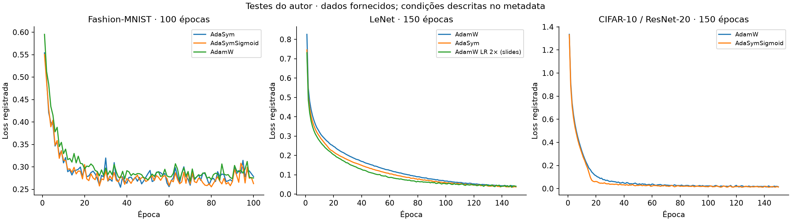
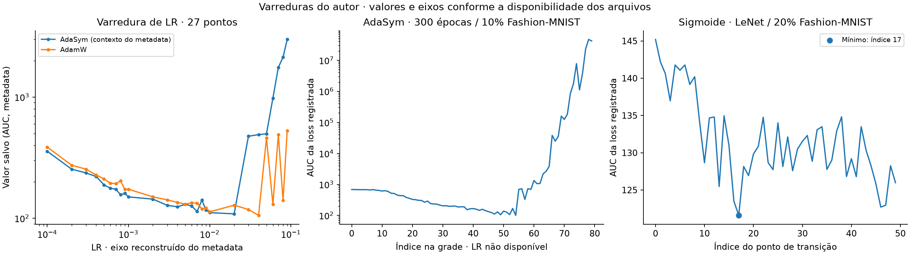
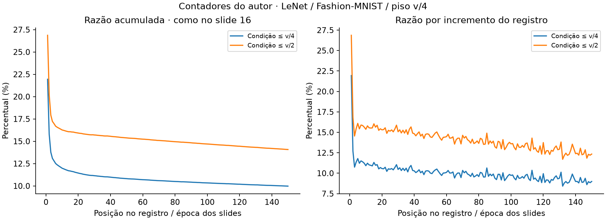
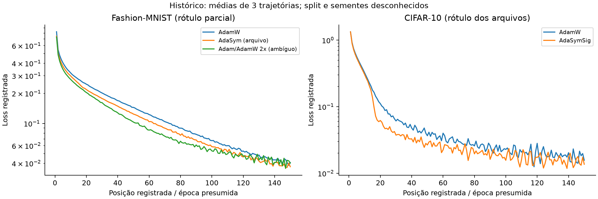
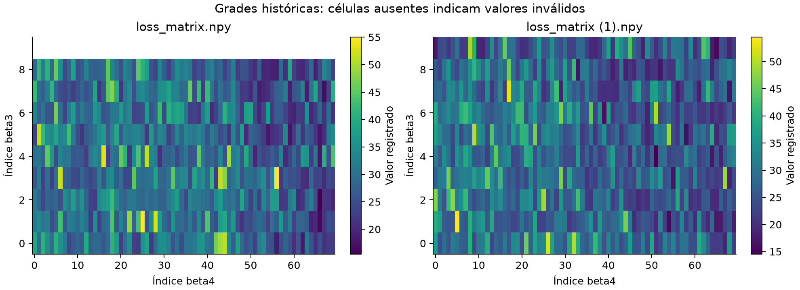
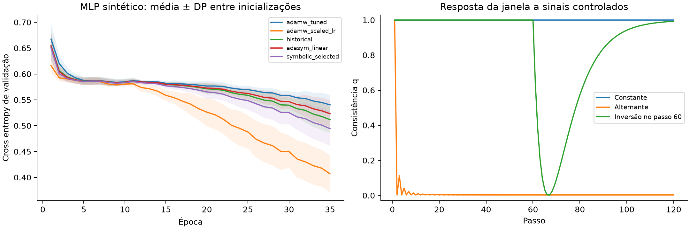

AdaSym
AdaSym é um otimizador experimental para redes neurais que adapta o tamanho do passo à consistência recente dos gradientes. Quando os gradientes mantêm uma direção, o método permite atualizações maiores. Um limite no denominador controla essa amplificação, e uma variante com sigmoide reduz o incentivo ao longo do treinamento.
A pesquisa usa regressão simbólica para explorar fórmulas de atualização. As expressões promissoras passam por simplificação e testes empíricos, até restringir a busca a regras que possam ser interpretadas e comparadas com AdamW. O objetivo é reduzir o número de épocas necessário para chegar a uma loss baixa, preservando o comportamento estável no final do treino.
Os experimentos incluem Fashion-MNIST com LeNet e CIFAR-10 com ResNet-20, além de varreduras de hiperparâmetros. As curvas dessas duas comparações, descritas com a mesma taxa de aprendizado, apoiam a hipótese de convergência mais rápida com oscilação final da loss comparável à de AdamW. A seção de resultados apresenta as medidas e as exceções observadas.
A pesquisa completa desenvolve a fundamentação e as extensões do método. Para uma leitura no navegador, abra LEIA-ME.html. O mapa de experimentos identifica os arquivos de cada teste, e o protocolo de avaliação descreve as próximas comparações. A proveniência registra a origem dos dados.
Como funciona
Durante o treinamento, o gradiente indica como alterar os pesos para reduzir a função de perda, ou loss. Como cada minibatch contém exemplos diferentes, essa indicação varia de um passo para outro. Adam usa uma média dos gradientes para definir a direção e uma média dos gradientes ao quadrado para ajustar a escala da atualização.
AdaSym acrescenta uma memória da direção, m2, à normalização. Gradientes que concordam tendem a manter essa memória forte. Mudanças de sinal tendem a produzir cancelamento. Essa é a ideia da janela de consistência: usar o histórico recente para decidir quanto ampliar o passo em cada coordenada.
Regra de atualização
| Termo | Significado |
|---|---|
| m1 | Média dos gradientes que define a direção da atualização |
| v | Média dos gradientes ao quadrado, usada para normalizar o passo |
| m2 | Memória adicional da direção recente; tem um papel distinto de v |
| s | Peso da correção de consistência, constante ou variável no tempo |
| c | Divisor do piso v/c, que limita o aumento do passo |
| eta | Taxa de aprendizado |
| theta | Pesos da rede |
A correção s·m2² diminui d. Como a atualização divide por raiz(d), essa diminuição aumenta o passo. O max impede que d caia abaixo de v/c. Para o mesmo estado dos momentos, a amplificação adaptativa fica entre 1 e raiz(c): com c=4, até 2×; com c=8, até aproximadamente 2,83×.
Por exemplo, considere uma coordenada com v=4, m1=0,2, c=4 e s=1:
| m2² | d | Tamanho do passo, sem o fator eta |
|---|---|---|
| 0 | 4 | 0,1000 |
| 1 | 3 | 0,1155 |
| 3 ou mais | 1, limitado pelo piso | 0,2000 |
No treinamento, m1, m2 e v mudam juntos. O limite descreve quanto o denominador pode ampliar o passo em um dado estado; ele não garante descida da loss a cada atualização. Epsilon, correção de viés e weight decay completam a especificação numérica da implementação.
Redução temporal da correção
A variante AdaSym sem redução temporal mantém s=1. AdaSymSigmoid usa uma sigmoide decrescente, com época de transição T e época atual e:
Antes de T, o método aplica quase toda a correção de consistência. Em T, o peso é 0,5. Depois, o denominador se aproxima de v. Essa transição procura combinar passos maiores no início com uma normalização mais próxima da usada por Adam no final.
Uma configuração registrada em metadata.txt usa sigmoid(15 − cur_epoch) e max(v_hat − alpha·s_hat², v_hat/8). Nessa implementação, alpha é o peso temporal s, e s_hat é a memória m2. Os testes incluem pisos v/4 e v/8. A recorrência original de m2, incluindo o papel de beta3 e beta4, ainda precisa ser recuperada para reproduzir esses treinamentos exatamente.
Resultados disponíveis
Os dados dos experimentos estão em data/original/. O relatório dos experimentos contém os números completos e as condições descritas no metadata. As losses não identificam se o registro pertence ao treino, à validação ou ao teste; por isso, as comparações abaixo descrevem a dinâmica das curvas, sem concluir sobre acurácia ou generalização.

Rapidez de convergência e comportamento final
Para medir a redução da loss em número de épocas, foi usado o primeiro trecho de cinco épocas consecutivas em que a curva média das três trajetórias permanece em loss ≤ 0,1. A oscilação final é a média dos desvios padrão temporais de cada trajetória nas últimas 20 épocas.
| Experimento | Método | Época até o alvo | Loss média final, 20 épocas | DP temporal final, 20 épocas |
|---|---|---|---|---|
| Fashion-MNIST / LeNet | AdamW | 73 | 0,043519 | 0,003417 |
| Fashion-MNIST / LeNet | AdaSym | 63 | 0,039634 | 0,003163 |
| CIFAR-10 / ResNet-20 | AdamW | 22 | 0,018017 | 0,004495 |
| CIFAR-10 / ResNet-20 | AdaSymSigmoid | 16 | 0,015440 | 0,004120 |
Nos pares descritos com LR 1e-3, AdaSym chega ao alvo antes de AdamW e termina com loss média menor. A variabilidade temporal no trecho final também é ligeiramente menor nessas duas comparações.
A hipótese apoiada por esses resultados é que AdaSym pode acelerar a convergência em número de épocas, mantendo estabilidade final comparável à de AdamW nas configurações avaliadas. Aqui, estabilidade se refere à oscilação observada da loss. Demonstrar igualdade de estabilidade exige uma comparação estatística própria.
O alvo, as cinco épocas consecutivas e a janela de 20 épocas são resumos exploratórios escolhidos após observar as curvas. O DP temporal inclui qualquer tendência residual no trecho final. Esses números não medem tempo de execução nem dispersão entre sementes. O cálculo de convergência apresenta a definição das medidas e os resultados por arquivo.
Há dois controles que limitam a conclusão. AdamW com LR 2× alcança o mesmo alvo na época 54, antes de AdaSym. Já a variante AdaSym sem redução temporal alcança o alvo na época 60, mas apresenta oscilação final maior, com DP temporal de 0,007535. O efeito depende da taxa de aprendizado e da variante usada.
Comparações de loss
As médias nas últimas dez épocas e sobre a curva inteira complementam a análise de convergência:
| Experimento | Método | Média nas últimas 10 épocas | Média na curva inteira |
|---|---|---|---|
| Fashion-MNIST, 100 épocas | AdaSym | 0,290194 | 0,291404 |
| Fashion-MNIST, 100 épocas | AdaSymSigmoid | 0,282255 | 0,287134 |
| Fashion-MNIST, 100 épocas | AdamW | 0,289600 | 0,302175 |
| LeNet, 150 épocas | AdaSym | 0,038349 | 0,120462 |
| LeNet, 150 épocas | AdamW | 0,041992 | 0,135194 |
| LeNet, 150 épocas | AdaSym sem redução temporal | 0,038083 | 0,117264 |
| LeNet, 150 épocas | AdamW com LR 2× | 0,041124 | 0,109575 |
| CIFAR-10, 150 épocas | AdaSymSigmoid | 0,015382 | 0,069594 |
| CIFAR-10, 150 épocas | AdamW | 0,017411 | 0,081801 |
A rodada de 100 épocas compara AdaSym, AdaSymSigmoid e AdamW em Fashion-MNIST. O grupo LeNet de 150 épocas usa LR 1e-3; seu registro cita piso v/4 e valores (0,75; 0,35), com uma ambiguidade na associação entre arquivos e redução temporal. A rodada CIFAR-10 usa ResNet-20, LR 1e-3, weight decay 1e-2, transição na época 15 e piso v/8.
O controle LR 2× tem dois rótulos de dataset nos registros: MNIST no metadata e Fashion-MNIST na apresentação original. A auditoria dos arquivos detalha essa diferença, a identificação das trajetórias e as demais lacunas de reprodução.
Varreduras de hiperparâmetros
| Teste | Condições | Resultado |
|---|---|---|
| LR de AdaSym, 80 pontos | 300 épocas, 10% de Fashion-MNIST, AUC de loss, WD 1e-2, valores (0,75; 0,35) | Mínimo 101,313248 no índice 54. O eixo de LRs não foi salvo |
| LRs comparativas, 27 pontos | Grade de 1e-4 a 9e-2 reconstruída do metadata | Mínimos 109,020409 e 105,941498; LRs inferidas de 0,02 e 0,04 |
| Transição da sigmoide | LeNet, 20% de Fashion-MNIST, 150 épocas, LR 1e-3, WD 1e-2, faixa de 0 a 50 | Menor AUC 121,601784 no índice 17. A época exata depende do eixo original |
| Coeficientes de m2 | Duas grades beta3 × beta4 de 10 × 70 | Mínimos em (0,584341; 0,740568) e (0,674355; 0,406159) |
| Ativação do piso v/4 | LeNet, Fashion-MNIST, 150 registros | Razões acumuladas finais de 9,9777% para c4/full e 14,0758% para c2/full |
| Divisor do piso | LeNet, 20% de Fashion-MNIST, 150 épocas, LR 1e-3, WD 1e-2, sem decaimento, divisores de 2 a 20 | Teste registrado como div_aucloss; o arquivo numérico ainda não está no repositório |
As varreduras investigam a duração da janela, a intensidade da correção e a frequência com que o limite do passo atua. Seus mínimos orientam novas configurações. Os registros ainda precisam de identificação completa das sementes, dos splits e das recorrências para permitir uma confirmação independente.
Implementações e extensões
O repositório contém uma variante de janela comum: a média dos gradientes e a média dos gradientes ao quadrado usam a mesma ponderação temporal. Uma razão normalizada q mede a consistência, e uma função h(q) controla a correção do denominador. Essa extensão tem uma definição executável; a recorrência histórica de m2 permanece documentada como uma lacuna.
- O ensaio sintético compara funções h(q), usa cinco inicializações na confirmação e inclui AdamW com LR maior. Nessa tarefa, o controle com LR maior superou as variantes AdaSym.
- A verificação da implementação cobre recorrência, limites de ganho, gradientes, paridade NumPy/PyTorch e retomada de estado.
Esses resultados delimitam a hipótese de aceleração. Sua confirmação requer recuperar a implementação original, repetir as comparações com orçamento equivalente de ajuste e avaliar a fórmula em tarefas que não participaram da seleção.
Convergência e oscilação da loss no final do treino
A comparação considera as curvas salvas de 150 épocas. O tempo até o alvo é a primeira época de uma sequência de cinco épocas em que a média das três trajetórias permanece em loss ≤ 0,1. A medida usa épocas de treinamento, sem estimar tempo de execução.
A variabilidade final é a média dos desvios padrão temporais, calculados separadamente em cada trajetória nas últimas 20 épocas, com ddof=1. Ela inclui qualquer tendência residual desse trecho. A medida descreve a oscilação da loss e não equivale à dispersão entre sementes ou a uma garantia de estabilidade do otimizador.
| Experimento | Método | Época até o alvo na curva média | Loss média nas últimas 20 épocas | DP temporal médio nas últimas 20 épocas |
|---|---|---|---|---|
| Fashion-MNIST / LeNet | AdamW | 73 | 0.043519 | 0.003417 |
| Fashion-MNIST / LeNet | AdaSym | 63 | 0.039634 | 0.003163 |
| CIFAR-10 / ResNet-20 | AdamW | 22 | 0.018017 | 0.004495 |
| CIFAR-10 / ResNet-20 | AdaSymSigmoid | 16 | 0.015440 | 0.004120 |
| Grupo LeNet, variante sem redução temporal | AdaSym nored | 60 | 0.039071 | 0.007535 |
| Grupo LeNet, rótulo de dataset divergente | AdamW LR 2× | 54 | 0.042096 | 0.005114 |
Interpretação
No par Fashion-MNIST/LeNet descrito com LR 1e-3, AdaSym atinge o alvo na época 63 e AdamW na 73. No par CIFAR-10/ResNet-20, ambos com LR 1e-3, AdaSymSigmoid atinge o alvo na época 16 e AdamW na 22. As variantes AdaSym dessas duas comparações apresentam loss média menor e DP temporal ligeiramente menor nas últimas 20 épocas.
Essas observações apoiam a hipótese de que AdaSym acelera a convergência em número de épocas com oscilação final da loss comparável à de AdamW, nas configurações avaliadas. Elas não demonstram equivalência estatística de estabilidade nem superioridade em tarefas não avaliadas.
A conclusão tem exceções importantes: o controle AdamW com LR 2× alcança o alvo antes de AdaSym, e a variante AdaSym nored apresenta DP temporal maior no final. A alegação de aceleração se refere aos pares descritos com a mesma LR; o comportamento depende da variante e do ajuste dos hiperparâmetros.
O alvo de 0,1, as cinco épocas consecutivas e a janela final de 20 épocas foram escolhidos após observar as curvas, para produzir uma descrição auditável. Não constituem um protocolo pré-registrado. Os IDs de sementes e o split da loss não acompanham os arquivos; há ainda uma ambiguidade de scheduler no grupo LeNet e de dataset no controle LR 2×, detalhada no mapa de experimentos. Uma comparação confirmatória deve congelar essas escolhas antes dos próximos testes.
Testes realizados pelo autor
Esta seção incorpora os experimentos já realizados na pesquisa AdaSym. As condições vêm de data/original/metadata.txt e da apresentação AdaSym. Os números abaixo foram recalculados a partir dos arrays fornecidos. A revisão não executou novamente esses treinamentos.
A loss é apresentada conforme registrada. Nas matrizes 3 × 150, as tabelas agregam as três trajetórias, como os gráficos de média e desvio padrão dos slides. No arquivo 3 × 100, cada linha corresponde a um otimizador. A média da loss ao longo das épocas descreve a curva inteira e não equivale à loss final, à acurácia nem à AUC original dos vetores de varredura.
1. Fashion-MNIST: AdaSym, AdaSymSigmoid e AdamW
Condição registrada: Fashion-MNIST, 100 épocas. Arquivo losses_FashionMNIST.npy, slides 8 e 9. A ordem das linhas abaixo é inferida pela correspondência dos valores com esses gráficos.
| Método | Loss na época 100 | Média das últimas 10 épocas | Média nas 100 épocas |
|---|---|---|---|
| AdaSym | 0.278333 | 0.290194 | 0.291404 |
| AdaSymSigmoid | 0.262625 | 0.282255 | 0.287134 |
| AdamW | 0.275254 | 0.289600 | 0.302175 |
Leitura: AdaSymSigmoid apresenta a menor média da loss ao longo das épocas e nas últimas dez épocas desse teste. A diferença entre AdaSym sem sigmoide e AdamW depende do resumo usado: AdaSym tem média da curva menor, mas AdamW tem média ligeiramente menor nas últimas dez épocas. Isso favorece uma comparação por trajetória, além de um único ponto final.
2. LeNet em Fashion-MNIST: comparação de 150 épocas
Condições no metadata: LeNet, Fashion-MNIST, 150 épocas e LR 1e-3. O texto cita uma execução sem redução por sigmoide ou exponencial e, em outro trecho, piso v/4, valores (0,75; 0,35) e sigmoide por época. A associação exata desses trechos às variantes deve seguir o código original quando ele estiver disponível. O arquivo AdaSym_loss_fmnist_nored.npy identifica explicitamente a variante sem redução temporal pelo nome.
| Resultado salvo | Média das últimas 10 épocas | Média nas 150 épocas |
|---|---|---|
| AdamW | 0.041992 | 0.135194 |
| AdaSym | 0.038349 | 0.120462 |
| AdaSym, arquivo nored | 0.038083 | 0.117264 |
Leitura: as duas curvas AdaSym registram médias menores que AdamW nesse conjunto de arquivos, tanto na curva inteira quanto no trecho final. O teste documenta a comparação do autor; a interpretação como ganho de generalização depende de identificar se a loss é de treino, validação ou teste.
3. CIFAR-10: AdaSymSigmoid contra AdamW
Condições no metadata: CIFAR-10, ResNet-20, 150 épocas, LR 1e-3, weight decay 1e-2, sigmoide com transição na época 15 e piso v/8. Arquivos AdamW_losses_cifar10.npy e AdaSymSig_losses_cifar10.npy, slides 12 e 13.
| Método | Média das últimas 10 épocas | Média nas 150 épocas |
|---|---|---|
| AdamW | 0.017411 | 0.081801 |
| AdaSymSigmoid | 0.015382 | 0.069594 |
Leitura: AdaSymSigmoid tem menor média de loss nos dois resumos. As curvas preservam a melhoria inicial e a aproximação entre métodos no fim do treinamento, conforme os slides. Não há uma curva de acurácia correspondente nesses arquivos.
4. Controle de tamanho do passo: AdamW com LR 2×
Condição relatada: LeNet, 150 épocas e AdamW com o dobro da LR. O metadata diz MNIST e os slides 14 e 15 dizem Fashion-MNIST. Mantém-se essa diferença de rótulo sem alterar os dados. Adam_losses2x.npy é o nome original do arquivo.
| Método / arquivo | Média das últimas 10 épocas | Média nas 150 épocas |
|---|---|---|
| AdamW LR 2×, rótulo dos slides | 0.041124 | 0.109575 |
| AdaSym | 0.038349 | 0.120462 |
Leitura: o controle LR 2× tem menor média sobre toda a curva, enquanto AdaSym tem menor média no trecho final. O próprio histórico do autor já permite perguntar se a vantagem desejada é aceleração inicial, qualidade tardia ou ambas. Esse controle deve acompanhar qualquer conclusão sobre a janela de consistência.
5. Varreduras de learning rate
Varredura AdaSym de 80 posições: o metadata informa 300 épocas, 10% de Fashion-MNIST, AUC de loss, WD 1e-2 e valores b1/b2 = (0,75; 0,35). O papel desses dois coeficientes é preservado conforme o texto, sem atribuí-los automaticamente aos momentos do Adam. Arquivo lrs_AdaSym_aucloss.npy.
O menor valor é 101.313248, no índice 54 (índice zero). Como a grade de 80 LRs não acompanha o material, esse mínimo não recebe uma LR inventada.
Varredura comparativa de 27 posições: lrs_aucloss.npy e lrs_aucloss_adamW.npy. O metadata fornece uma grade de 27 LRs de 1e-4 a 9e-2. O trecho próximo inclui sigmoid(15 − época) e piso v/8, mas não especifica todas as condições dessa rodada.
| Vetor | Mínimo registrado | Índice zero | LR pela grade do metadata |
|---|---|---|---|
| lrs_aucloss.npy | 109.020409 | 19 | 0.02 |
| lrs_aucloss_adamW.npy | 105.941498 | 21 | 0.04 |
A correspondência dos 27 pontos com essa grade é uma inferência apoiada pelo tamanho do vetor e pela descrição. O primeiro vetor é associado à variante AdaSym pelo contexto do metadata. O slide 17 usa o rótulo “média das últimas 15 losses”, enquanto o texto descreve AUC e uma faixa maior de LRs. Por isso, o gráfico novo abaixo mostra os valores salvos com seu significado declarado no metadata, sem afirmar que reproduz exatamente o pós-processamento daquele slide.
6. Momento de transição da sigmoide
Condições: LeNet, 20% de Fashion-MNIST, 150 épocas, LR 1e-3 e WD 1e-2. O metadata descreve a varredura do ponto médio da sigmoide na faixa 0–50. Arquivo lim_aucloss.npy, com 50 valores.
O menor valor registrado é 121.601784, no índice 17. O eixo exato com seus endpoints não foi salvo. O resultado é identificado pelo índice; se a grade original era 0, 1, …, 49, esse ponto corresponde à transição na época 17.
Leitura: esse teste investiga por quanto tempo manter o incentivo à consistência. A sigmoide começa próxima de 1, passa por 0,5 no ponto de transição e se aproxima de zero depois dele.

7. Busca dos coeficientes de m2
O metadata identifica duas grades para procurar os melhores valores de beta3 e beta4 de m2. Os mínimos recalculados coincidem com as marcações dos slides 18 e 19.
| Grade | Shape | Mínimo finito | beta3 | beta4 | Valores inválidos |
|---|---|---|---|---|---|
| loss_matrix.npy | 10 × 70 | 15.459559 | 0.584341 | 0.740568 | 70 |
| loss_matrix (1).npy | 10 × 70 | 14.534201 | 0.674355 | 0.406159 | 0 |
As faixas exatas estão no mapa dos experimentos. Esses mínimos descrevem a varredura do autor. Sem a recorrência de m2 e a definição completa do fitness, os coeficientes não são convertidos em uma nova EMA nem recomendados como configuração universal.
8. Frequência de ativação do piso
Condições: LeNet, Fashion-MNIST, piso v/4. Arquivos AdaSym_fminist_c2.npy, AdaSym_fminist_c4.npy e AdaSym_fminist_full.npy. O metadata cita 1550 épocas, mas os vetores têm 150 posições, como o eixo do slide 16.
| Contador | Interpretação pelo slide e metadata | Razão acumulada final |
|---|---|---|
| c4 / full | Condição associada ao piso v/4 | 9.9777% |
| c2 / full | Condição associada a ≤v/2 | 14.0758% |
O gráfico do slide 16 identifica as séries como acumuladas. A frequência em uma época isolada deve usar o incremento do contador dividido pelo incremento de full. A razão acumulada final mostra quanto o mecanismo de piso participou do treinamento, e não uma fração de runs ou de épocas.

9. Varredura do divisor do piso
O metadata registra um teste div_aucloss: LeNet, 20% de Fashion-MNIST, 150 épocas, LR 1e-3, WD 1e-2, sem decaimento temporal e divisores de 2 a 20. O teste faz parte do percurso relatado pelo autor. O arquivo correspondente não foi fornecido, portanto seu resultado numérico permanece pendente de recuperação.
Síntese dos testes do autor
Os dados documentam comparações entre AdaSym, AdaSymSigmoid e AdamW, um controle de LR 2×, varreduras de LR, do ponto de transição da sigmoide e dos coeficientes de m2, além da frequência de acionamento do piso. A variante sigmoide apresenta losses menores nos resumos dos testes de 100 épocas em Fashion-MNIST e de 150 épocas em CIFAR-10. O controle LR 2× explicita um compromisso entre a curva inteira e seu trecho final.
Esses são resultados existentes da pesquisa. A identificação de splits, seeds e recorrências é necessária para aprofundar as conclusões, mas não elimina os experimentos realizados. A auditoria técnica e as diferenças de metadata permanecem em results/historical/report.md. O ensaio sintético desta revisão está documentado separadamente e não substitui os testes do autor.
AdaSym: descoberta simbólica de otimizadores com janela de consistência
Versão de pesquisa: 29 de outubro de 2026. A base desta pesquisa é o AdaSym apresentado nos slides e testado pelo autor nos experimentos descritos no metadata. O texto explica primeiro essa formulação e seus resultados. A janela comum normalizada e os experimentos sintéticos aparecem depois como extensões adicionais desta revisão.
1. Pergunta de pesquisa
Uma rede neural pode convergir mais rapidamente quando o otimizador aumenta seletivamente seus passos nas coordenadas cujos gradientes mantêm direção e magnitude durante uma janela recente?
A hipótese do projeto é que a persistência do gradiente informa o quanto se pode amplificar o passo. A regressão simbólica serve para explorar regras candidatas, identificar estruturas promissoras e restringir progressivamente o espaço de busca. A avaliação empírica deve separar um ganho causado pela consistência de um ganho obtido apenas por uma taxa de aprendizado maior.
O objetivo verificável é melhorar a eficiência até uma loss ou acurácia predefinida, mantendo qualidade de teste e orçamento de ajuste comparáveis. Convergência em menos épocas, tempo até o alvo, custo de estado e generalização são resultados diferentes e devem aparecer separadamente.
2. AdaSym na apresentação: regra e interpretação
A fórmula final dos slides
AdaSym mantém uma direção de atualização m1 e modifica a escala usada para normalizar o passo. A memória adicional m2 representa a persistência recente do gradiente. A ideia é dar um passo maior quando essa memória permanece forte em relação à escala v dos gradientes ao quadrado.
Na notação da apresentação:
| Símbolo | Significado e efeito |
|---|---|
| g | Gradiente calculado no passo atual |
| m1 | Memória da direção do gradiente que determina para onde os pesos se movem |
| v | Memória da magnitude dos gradientes ao quadrado, usada como escala de normalização |
| m2 | Memória adicional da direção do gradiente, relacionada à janela de consistência |
| s | Peso dado à correção m2²: constante na variante sem redução temporal, variável na sigmoide |
| c | Divisor do piso v/c. Valores 4 e 8 aparecem nos testes do autor |
| eta | Taxa de aprendizado |
| theta | Pesos da rede neural |
m2 e v têm papéis diferentes. O nome m2 não significa que ele seja o segundo momento do Adam. A expressão v já cumpre o papel da escala de segundo momento. A recorrência de m2, objeto das grades beta3/beta4, não está incluída nos arquivos recebidos. Sua interpretação como memória da consistência decorre da fórmula e da hipótese apresentada pelo autor, sem fixar coeficientes que não foram documentados.
A janela de consistência dentro da fórmula
Quando gradientes recentes apontam de maneira persistente na mesma direção, uma memória ponderada desses gradientes tende a manter magnitude. Quando os sinais se cancelam, essa memória tende a diminuir. Na regra dos slides, m2² mede a intensidade dessa memória e s controla quanto ela participa da atualização.
O mecanismo é direto: subtrair s·m2² reduz d. Como o passo divide por raiz(d), um denominador menor permite um passo maior. O max interrompe essa redução em v/c. Isso evita normalização por um valor negativo ou excessivamente pequeno em relação a v. Se v=0, a fórmula resumida ainda exige estabilização numérica na implementação.
Exemplo para uma coordenada, mantendo v=4, m1=0,2, c=4 e s=1:
| Memória m2² | v − s·m2² | Piso v/c | d escolhido | Tamanho do passo / eta |
|---|---|---|---|---|
| 0 | 4 | 1 | 4 | 0,1000 |
| 1 | 3 | 1 | 3 | 0,1155 |
| 3 | 1 | 1 | 1 | 0,2000 |
| 4 | 0 | 1 | 1 | 0,2000 |
O exemplo isola o efeito da memória no denominador. Em um treinamento, m1, m2 e v mudam juntos. Uma consistência maior permite uma amplificação relativa maior; ela não garante que o passo absoluto aumente em toda comparação entre épocas.
Para s ≥ 0 e c ≥ 1, o piso garante v/c ≤ d ≤ v. Sem epsilon, e para v>0, o ganho sobre o denominador raiz(v) fica entre 1 e raiz(c), considerando os mesmos momentos naquele instante. Assim, c=4 permite até 2× e c=8 até aproximadamente 2,83×. O limite descreve a parte adaptativa do passo e não prova convergência.
O papel da sigmoide
Na versão AdaSym sem redução temporal, a correção pode permanecer com s=1. Na versão AdaSymSigmoid, o peso da correção diminui com a época. Escrevendo T para o ponto de transição e e para a época atual, a fórmula do slide 7 fica:
| Época em relação a T | Peso aproximado s | Efeito |
|---|---|---|
| T − 5 | 0,9933 | Correção de consistência quase integral |
| T | 0,5 | Metade do peso da correção |
| T + 5 | 0,0067 | Denominador próximo da escala v |
O metadata contém o trecho:
alpha = torch.sigmoid(torch.tensor(15 - cur_epoch))
val = torch.clamp(v_hat - s_hat.square() * alpha, min=v_hat/8)
Nesse trecho, alpha é o peso s dos slides, s_hat é a memória m2, v_hat é a escala v e o divisor c é 8. O código indica como combinar essas quantidades, mas não inclui suas recorrências. O gráfico ilustrativo da apresentação usa T=5 e o metadata cita T=15 em uma configuração. São escolhas do ponto de transição, não definições diferentes da sigmoide.
Quando s tende a zero, d tende a v e a correção de consistência desaparece. A atualização só coincide com Adam/AdamW completo se os momentos, bias correction, epsilon e weight decay também coincidirem. A equação resumida dos slides não fixa todos esses detalhes.
Como a fórmula evoluiu na pesquisa
Os slides documentam as seguintes mudanças:
- Fórmula encontrada:
m1 / sqrt(abs(v − m1)), mostrada no slide 4. - Quadrado da memória:
m1 / sqrt(abs(v − m1²)), para compatibilizar a ordem da memória com a escala v. - Piso relativo:
m1 / sqrt(max(v − m1², v/c)), limitando a amplificação do passo. - Memória separada:
m1 / sqrt(max(v − m2², v/c)), permitindo investigar coeficientes próprios para a memória usada no denominador. - Peso temporal:
m1 / sqrt(max(v − s·m2², v/c)), com a sigmoide controlando por quanto tempo a correção permanece forte.
A primeira expressão subtrai grandezas de ordens diferentes se v representa E[g²] e m1 representa E[g]. A versão com m1² corrige a compatibilidade dimensional. O valor absoluto transforma qualquer diferença negativa em uma normalização positiva, mas sua interpretação depende da diferença entre as janelas. O piso v/c torna explícito um limite relativo do denominador. A sigmoide controla quanto da correção permanece ao longo do treinamento.
As matrizes existentes permitem descrever a loss registrada e localizar valores inválidos. Elas não identificam integralmente sementes, split dos dados, precisão, inicializações, scheduler ou recorrência de m2. Por isso, não demonstram uma nova garantia de convergência, superioridade estatística nem reprodução da descoberta simbólica. O relatório em results/historical/report.md quantifica o que pode ser medido e explicita as ambiguidades.
O histórico já contém um controle relevante de escala do passo: nos arquivos de 150 posições, a média registrada é 0,135194 para AdamW, 0,120462 para AdaSym e 0,109575 para o arquivo descrito como AdamW com LR 2×. Nas últimas dez posições, AdaSym tem média menor, 0,038349 contra 0,041124 do controle 2×. Essa diferença entre velocidade inicial e loss tardia ajuda a formular a próxima comparação. O conflito de rótulo MNIST/Fashion-MNIST e a ausência do código impedem tratar esses números como um experimento controlado já estabelecido. O mapa em docs/mapa_experimentos.md organiza as condições relatadas, incluindo os testes de LR, sigmoide, piso e betas.
3. Extensão opcional: janela comum com consistência normalizada
Esta seção introduz uma proposta adicional da revisão. As definições mu_t, u_t e q_t a seguir não constam da formulação original dos slides e não são atribuídas aos treinamentos do autor. A letra mu identifica a média do gradiente nesta extensão, enquanto s(e) continua identificando o peso temporal dos slides. A extensão usa uma janela comum para tornar a consistência normalizada interpretável e testável.
Para cada coordenada i, mantemos uma média exponencial do gradiente e uma média do gradiente ao quadrado, ambas com o mesmo beta:
Com estado inicial zero, usamos a mesma correção de viés nas duas:
A consistência proposta é
As operações são coordenada a coordenada. A expressão tem interpretação de momento normalizado: a média mantém seu peso quando os gradientes concordam e sofre cancelamento quando mudam de sinal. Oscilações de magnitude também reduzem q.
Com pesos normalizados não negativos, Jensen garante (média g)² ≤ média(g²). Assim, a razão pertence a [0,1], salvo arredondamento. Usar a mesma janela e a mesma correção de viés é essencial para essa interpretação. Na subtração dos slides v − m2², essa propriedade não pode ser assumida quando v e m2 usam janelas ou ponderações diferentes. A recorrência original precisa ser recuperada para estabelecer a relação exata entre eles.
Exemplos sem ambiguidade
| Gradientes em uma janela com pesos iguais | Média | Segundo momento | Consistência sem epsilon |
|---|---|---|---|
| 1, 1, 1, 1 | 1 | 1 | 1 |
| 1, −1, 1, −1 | 0 | 1 | 0 |
| 1, 3, 1, 3 | 2 | 5 | 0,8 |
| 0, 0, 0, 0 | 0 | 0 | 0 pela convenção estabilizada |
Na EMA, o caso alternante geralmente tem q pequeno e diferente de zero porque o último gradiente pesa mais. Sob um modelo estacionário com média μ e variância σ², a razão populacional é μ²/(μ²+σ²). A razão das estimativas em uma janela finita não é um estimador sem viés dessa quantidade.
Esta definição combina consistência de sinal e de magnitude. Ela não é uma medida exclusiva do ângulo do gradiente global, nem um intervalo de confiança. Um gradiente persistentemente errado, provocado por viés no minibatch ou mudança na tarefa, pode ter consistência alta.
O tamanho da janela
Uma EMA não possui corte rígido. Seu tamanho efetivo assintótico é
Depois de t observações, o tamanho efetivo é
| beta da janela | Tamanho efetivo assintótico |
|---|---|
| 0,35 | 2,08 |
| 0,75 | 7 |
| 0,90 | 19 |
| 0,95 | 39 |
| 0,99 | 199 |
Janelas curtas reagem cedo, mas podem confundir ruído com persistência. Janelas longas reduzem esse ruído e atrasam a resposta a inversões. No primeiro passo não nulo, q é praticamente 1 mesmo sem evidência de persistência. O warmup reduz gradualmente a amplificação inicial. Ele não elimina esse viés nem substitui a análise da janela.
4. Regra adicional para a janela comum
Mantemos os momentos do Adam separados da janela:
Aplicamos bias correction a m e v. A família restrita é
Aqui, c ≥ 1, a está em [0,1], e h leva [0,1] a [0,1], de forma crescente. A primeira hipótese é h(q)=q. O weight decay é desacoplado, como em AdamW. Epsilon entra fora da raiz na atualização, e epsilon² estabiliza a razão de consistência.
O sinal da atualização adaptativa vem de m. A consistência altera sua magnitude relativa. Quanto maior q, menor o denominador e maior o passo, até o limite definido por c. Esse aumento se refere ao passo que AdamW daria com os mesmos momentos naquele instante. Não implica que todo passo absoluto cresça quando q cresce, porque m e v também mudam.
Um limite útil e seu alcance
Como v/c ≤ d ≤ v, a amplificação relativa ao AdamW com o mesmo estado satisfaz
Com c=4, o ganho adaptativo máximo é 2. Com c=8, é aproximadamente 2,83. Esse limite vale para a parte adaptativa, não para a atualização total que inclui weight decay. Ele não garante descida a cada passo ou convergência. Em trajetórias diferentes, os momentos dos dois otimizadores deixam de coincidir, portanto o limite não compara diretamente seus parâmetros após vários passos.
Se a=0 ou c=1, a regra coincide com AdamW para os mesmos hiperparâmetros. Se beta_window=beta2, o estado u pode compartilhar v em uma implementação otimizada. A implementação de referência guarda ambos explicitamente para facilitar inspeção. São quatro estados de momento por parâmetro, contra dois no AdamW. Não há alegação de economia de memória ou tempo.
Consistência por coordenada ou por bloco
A implementação usa q por coordenada. Uma alternativa para uma camada é q_bloco = ||E[g]||²/(E[||g||²]+eps²). Sem epsilon, essa quantidade equivale à média de q por coordenada ponderada por seu segundo momento. Ela reduz custo de diagnóstico e mistura coordenadas com comportamentos diferentes. A escolha entre as duas é uma ablação futura. Alinhamento angular puro, como cosseno entre gradientes consecutivos, responde a outra pergunta e deve ser testado separadamente.
Sigmoide opcional
O projeto histórico reduz a correção por época. A especificação nova usa progresso normalizado p em [0,1]:
O modo constante remove apenas a sigmoide e mantém o warmup. Uma janela já adapta o ganho aos gradientes. Assim, o decaimento temporal é uma hipótese adicional, não requisito da ideia central. Comparar constante e sigmoide permite verificar se a eventual melhora depende de uma política de LR embutida. A sigmoide histórica em épocas e esta versão normalizada não são equivalentes por padrão.
5. Regressão simbólica e restrição do espaço
Se a busca otimiza uma fórmula diretamente pelo desempenho de treinamento, ela é busca simbólica de programas ou de regras de atualização. O termo regressão simbólica se aplica estritamente quando há pares entrada/alvo para ajustar uma expressão. Ambos podem entrar no projeto, mas o fitness e a origem dos alvos precisam ser registrados.
A proposta separa duas etapas:
- Exploração ampla futura: árvores tipadas com gradientes, momentos e funções protegidas. Registrar indivíduos, pais, mutações, sementes, custo, fitness e fórmulas descartadas. Conservar soluções na fronteira de desempenho, complexidade e estabilidade. Essa etapa histórica não pode ser reproduzida com os arquivos entregues.
- Busca restrita executável agora: fixar direção e momentos, e buscar somente h(q). Isso reduz o espaço a uma variável sem dimensão com domínio conhecido. O código enumera uma gramática pequena em vez de executar um algoritmo evolutivo completo.
A gramática atual contém q, q*q, sqrt(q), 2*q/(1+q) e tanh(q)/tanh(1). Todas são monótonas, não negativas e limitadas em [0,1]. O piso externo limita o ganho independentemente da transformação. A normalização impede misturar dimensões incompatíveis e preserva a simetria de sinal. A invariância a reescala é aproximada na presença de epsilon.
Cada expressão usa a mesma grade de LR e as mesmas sementes de triagem. A seleção ordena pela média da loss de validação ao longo das épocas, com complexidade como desempate. O tamanho da árvore é uma aproximação de complexidade, não de latência. A busca é pequena e auditável, mas não identifica o ótimo do espaço de otimizadores nem reproduz o mecanismo original.
Uma extensão deve usar árvores tipadas de profundidade limitada, deduplicação algébrica e comparação numérica de expressões equivalentes. Testes com gradiente zero, sinal invertido, spikes e escalas diferentes devem filtrar fórmulas antes de treinar redes. Operações protegidas precisam registrar quando a proteção atua, pois ela altera a fórmula efetiva.
6. Resultados disponíveis: testes do autor e ensaio adicional
Experimentos realizados pelo autor
O relatório results/original_tests/report.md incorpora os resultados de Data com as condições do metadata. Ele inclui as comparações em Fashion-MNIST e CIFAR-10, o controle de LR 2×, as varreduras de LR e de transição da sigmoide, as grades de coeficientes de m2 e os contadores do piso.
| Teste do autor | Condições registradas | Resultado recalculado |
|---|---|---|
| AdaSym / AdaSymSigmoid / AdamW | Fashion-MNIST, 100 épocas | Médias na curva: 0,291404 / 0,287134 / 0,302175. Sigmoid tem menor média na curva e nas últimas dez épocas |
| AdaSym / AdamW | LeNet, Fashion-MNIST, 150 épocas, LR 1e-3 | Médias nas últimas dez épocas: 0,038349 / 0,041992 |
| Variante AdaSym nored | Mesmo grupo de arquivos LeNet / Fashion-MNIST, sem redução temporal pelo nome | Média nas últimas dez épocas: 0,038083; ligação exata entre scheduler e arquivos documentada no mapa |
| AdaSymSigmoid / AdamW | CIFAR-10, ResNet-20, 150 épocas, LR 1e-3, WD 1e-2, T=15, piso v/8 | Médias nas últimas dez épocas: 0,015382 / 0,017411 |
| AdamW com LR 2× | LeNet, 150 épocas, dataset descrito de forma diferente entre metadata e slides | Média na curva 0,109575, menor que 0,120462 de AdaSym; no trecho final AdaSym tem média menor |
| LR de AdaSym, 80 pontos | 300 épocas, 10% Fashion-MNIST, AUC, WD 1e-2, valores (0,75; 0,35) | Mínimo 101,313248, índice 54; a grade de LRs não foi fornecida |
| LRs comparativas, 27 pontos | Grade reconstruída do metadata de 1e-4 a 9e-2 | Mínimos 109,020409 e 105,941498; LRs inferidas 0,02 e 0,04 |
| Ponto de transição da sigmoide | LeNet, 20% Fashion-MNIST, 150 épocas, LR 1e-3, WD 1e-2, faixa 0–50 | Menor AUC 121,601784, índice 17 |
| beta3 / beta4 de m2 | Duas grades de 10 × 70 | Mínimos em (0,584341; 0,740568) e (0,674355; 0,406159), como nos slides |
| Ativação do piso v/4 | LeNet, Fashion-MNIST, 150 registros | Razão final c4/full = 9,9777%; c2/full = 14,0758% |
| Divisor do piso, 2–20 | LeNet, 20% Fashion-MNIST, 150 épocas, LR 1e-3, WD 1e-2, sem decaimento | Teste descrito no metadata; arquivo div_aucloss não incluído |
Esses experimentos integram a evidência original da pesquisa. As losses menores em várias comparações apoiam investigar a dinâmica do AdaSym. A falta de identificação do split e das sementes limita o alcance das conclusões, sem transformar os testes existentes em experimentos apenas planejados. As notas da auditoria complementam essa apresentação dos resultados.
Ensaio sintético adicional desta revisão
O experimento incluído treina um MLP tanh 12–24–2 em classificação sintética não linear. A triagem usa duas inicializações. A confirmação usa cinco inicializações novas e novas amostras, mantendo o mesmo gerador da tarefa. As configurações são congeladas antes de avaliar o teste. A seleção do checkpoint usa validação.
Esse ensaio usa a extensão de janela comum e uma reconstrução explicitada do denominador histórico. Ele não executa o código original de m2 e não substitui os experimentos de visão realizados pelo autor.
No ensaio de 35 épocas, a busca escolheu sqrt(q). O AdamW com grade de LR ampliada pelo fator sqrt(c) obteve melhor resultado de teste que as variantes AdaSym. O relatório com médias, dispersão e todos os logs está em results/synthetic/report.md. Assim, este ensaio não confirma uma vantagem própria da janela. A melhor LR de várias famílias está na borda da grade, sinal de que a faixa deve ser ampliada na próxima fase, usando outro teste ainda não consultado.
A busca entre cinco expressões consome mais configurações do que o ajuste de uma baseline individual. Por isso, o resultado do vencedor simbólico inclui vantagem de orçamento de seleção. Antes de qualquer alegação comparativa, é necessário comparar orçamento total de ajuste, replicar em outras tarefas e manter um teste final intocado.
7. Experimentos que podem decidir a hipótese
O protocolo completo aparece em docs/protocolo.md. As comparações centrais são AdamW com LR ajustada, AdamW com LR multiplicada por sqrt(c), AdaSym sem consistência, janela comum linear, janela histórica com momentos distintos e janela com sigmoide. Uma baseline com ganho escalar médio pode aproximar o tamanho médio dos passos de AdaSym e testar o valor da adaptação coordenada.
Medir loss e acurácia de validação, tempo até alvo, taxa de divergência, normas de update, distribuição de q, ganho aplicado e frequência de saturação. Um teto que atua quase sempre transforma a regra em um escalonamento quase constante da LR. Isso enfraquece a explicação por consistência seletiva e precisa ser mostrado.
Reproduzir com logs completos os testes já realizados pelo autor em Fashion-MNIST com LeNet e CIFAR-10 com ResNet-20, e acrescentar ao menos uma tarefa fora de visão. Congelar a regra antes da avaliação de transferência. Os treinamentos originais já existem nos dados; o que permanece futuro é sua reprodução com uma especificação completa e a avaliação das extensões adicionais.
8. Critério para uma ideia final
Uma fórmula só deve se tornar candidata final quando superar controles de LR sob orçamento equivalente, repetir o efeito em sementes e tarefas distintas e justificar seu custo adicional. A versão escolhida precisa manter implementação, configurações, logs, falhas e ablações rastreáveis.
A hipótese central do AdaSym permanece a dos slides: amplificar o passo por uma correção de consistência m2², limitada por um piso relativo v/c e eventualmente reduzida por uma sigmoide. Os experimentos do autor documentam sua investigação empírica. A janela comum normalizada é uma extensão opcional para estudar essa ideia com uma estatística explicitada. A transformação raiz é uma candidata apenas dessa extensão, surgida no ensaio sintético. A seleção de uma regra final deve combinar a recuperação do código original, os testes já realizados e uma rodada controlada de confirmação.
9. Relação com trabalhos anteriores
- Adam: fundamenta o uso de primeiro e segundo momentos e bias correction. Kingma e Ba.
- AdamW: define weight decay desacoplado e fornece a baseline de referência. Loshchilov e Hutter.
- Symbolic Discovery of Optimization Algorithms: inspiração para busca de programas e seleção de regras transferíveis, incluindo Lion. A implementação atual é uma enumeração restrita e não replica esse sistema. Chen et al..
- AdaBelief: relaciona adaptação do passo à discrepância entre gradiente e sua previsão por momentum. É uma comparação relevante para estudar persistência e variabilidade, mas não usa a mesma estatística desta proposta. Zhuang et al..
- Centered RMSprop: já usa um segundo momento centralizado para normalização. A subtração de média ao quadrado possui precedentes. A novidade de AdaSym precisa ser estabelecida na combinação específica de janela, ganho limitado, busca e evidência empírica. Documentação oficial do PyTorch.
Esta contextualização não estabelece prioridade nem prova originalidade. Uma revisão bibliográfica sistemática continua necessária antes de submeter um artigo.
Mapa dos testes recebidos
Transcrição organizada de data/original/metadata.txt, cruzada com shapes e slides. Campos não informados permanecem desconhecidos. Os nomes preservam a grafia original, incluindo fminist.
| Arquivos | Descrição do metadata / slides | O que os dados confirmam | Pontos a resolver |
|---|---|---|---|
losses_FashionMNIST.npy |
Fashion-MNIST, 100 épocas, AdaSym / AdaSymSig / AdamW. Slides 8 e 9 | 3 × 100; ordem inferida AdaSym, AdaSymSigmoid, AdamW pelos valores iniciais e finais | Split da loss, seeds, configuração e ordem pelo código original |
AdamW_losses.npy, AdaSym_losses.npy |
LeNet, Fashion-MNIST, 150 épocas, LR 1e-3, sem redução por sigmoide ou exponencial em um trecho; outro trecho cita v/4, (0,75; 0,35), sigmoide por época | Cada arquivo tem 3 × 150. Slides mostram média e DP | Qual variante pertence exatamente a cada arquivo; recorrência e significado dos betas |
AdaSym_loss_fmnist_nored.npy |
Nome sugere ausência de redução temporal, compatível com parte da descrição acima | 3 × 150 | Ligação exata com os trechos de metadata e o baseline correspondente |
AdamW_losses_cifar10.npy, AdaSymSig_losses_cifar10.npy |
CIFAR-10, ResNet-20, 150 épocas, LR 1e-3, WD 1e-2, sigmoide em torno da época 15, piso v/8. Slides 12 e 13 | Cada arquivo tem 3 × 150 e curvas coerentes com o gráfico de média | Acurácia, split, scheduler, seeds, arquitetura exata e código |
Adam_losses2x.npy |
Metadata chama AdamW com LR 2×, LeNet, MNIST, 150 épocas. Slides 14 e 15 dizem Fashion-MNIST | 3 × 150 e curva coerente com o controle AdamW 2× dos slides | Conflito MNIST/Fashion-MNIST e nome Adam/AdamW |
loss_matrix.npy |
Varredura para m2. beta3 = 10^linspace(−0,3; 0; 10), beta4 = 10^linspace(−3; 0; 70). Slide 18 | 10 × 70, 70 NaNs na última linha. Mínimo finito coincide com o destaque do slide | Definição da recorrência, fitness e origem dos NaNs |
loss_matrix (1).npy |
Segunda varredura. beta3 = 10^linspace(−0,3; −0,01; 10), beta4 = 10^linspace(−1,5; 0; 70). Slide 19 | 10 × 70, sem NaN. Mínimo coincide com o destaque do slide | Mesmas lacunas da recorrência e do fitness |
lrs_AdaSym_aucloss.npy |
300 épocas, 10% de Fashion-MNIST, AUC de loss, WD 1e-2, valores (0,75; 0,35) | Vetor com 80 posições e valores muito altos em parte da faixa | A grade de 80 LRs e quais valores representam divergência |
lrs_aucloss.npy, lrs_aucloss_adamW.npy |
Uma grade concatenada 1e-4…9e-4, 1e-3…9e-3, 1e-2…9e-2; trecho próximo cita sigmoide(15−época), piso v/8 | Cada vetor tem 27 posições, compatível com o tamanho da grade | Associação exata entre configuração, fitness e cada vetor; o slide 17 usa outra descrição de métrica |
lim_aucloss.npy |
Ponto médio da sigmoide entre 0 e 50, LeNet, 20% Fashion-MNIST, LR 1e-3, WD 1e-2, 150 épocas | Vetor com 50 posições | Valores exatos do eixo, repetições e definição de AUC |
AdaSym_fminist_c2.npy, AdaSym_fminist_c4.npy, AdaSym_fminist_full.npy |
LeNet, Fashion-MNIST, piso v/4; contagens para ≤v/2, ≤v/4 e total. Metadata diz 1550 épocas. Slide 16 mostra 150 | Três vetores inteiros monotônicos de tamanho 150; razões acumuladas coincidem com o slide | Unidade de contagem, frequência e correção do número de épocas |
O metadata também menciona div_aucloss, uma varredura de divisor de 2 a 20 com 150 épocas, LeNet e 20% de Fashion-MNIST. Esse arquivo não acompanha a pasta recebida, portanto não há como recalcular esse teste.
Os exemplos de código preservados em metadata esclarecem a intenção do denominador:
alpha = torch.sigmoid(torch.tensor(15 - cur_epoch))
val = torch.clamp(v_hat - s_hat.square() * alpha, min=v_hat/8)
Eles não definem como v_hat e s_hat são calculados, nem epsilon, bias correction e atualização dos parâmetros. Por isso, a implementação nova explicita essas decisões em vez de atribuí-las ao histórico.
Auditoria dos resultados originais
Cada linha das matrizes 3 × 150 é tratada como trajetória sem identidade confirmada. A tabela agrega essas três trajetórias descritivamente. Não se presume que sejam sementes independentes ou que a loss seja de validação. Arquivos e hashes constam em inventory.json. AUC usa espaçamento de uma época, começando na primeira loss registrada. O código do cálculo original de AUC não foi fornecido.
| Arquivo | Média das últimas 10 posições | Média de todas as posições |
|---|---|---|
| AdaSymSig_losses_cifar10.npy | 0.015382 | 0.069594 |
| AdaSym_loss_fmnist_nored.npy | 0.038083 | 0.117264 |
| AdaSym_losses.npy | 0.038349 | 0.120462 |
| AdamW_losses.npy | 0.041992 | 0.135194 |
| AdamW_losses_cifar10.npy | 0.017411 | 0.081801 |
| Adam_losses2x.npy | 0.041124 | 0.109575 |
Cruzamento com o PowerPoint
Os gráficos dos slides 10, 12 e 14 identificam médias e desvios padrão, coerentes com três trajetórias por arquivo 3 × 150. Isso sustenta a interpretação como repetições, mas não identifica sementes ou independência. O gráfico do slide 16 explicita contadores acumulados, reforçando essa leitura dos arquivos c2/c4/full.
Para losses_FashionMNIST.npy (3 × 100), a correspondência dos valores iniciais e finais com os gráficos dos slides 8 e 9 permite inferir a ordem abaixo. É uma inferência visual verificável, ainda sem o programa que gerou o gráfico. Essas linhas representam métodos diferentes e não três sementes do mesmo método.
| Linha (índice zero) | Método inferido | Primeiro valor | Último valor | Média registrada |
|---|---|---|---|---|
| 0 | AdaSym | 0.553933 | 0.278333 | 0.291404 |
| 1 | AdaSymSigmoid | 0.550282 | 0.262625 | 0.287134 |
| 2 | AdamW | 0.595231 | 0.275254 | 0.302175 |
Os gráficos dos slides 18 e 19 indicam mínimos em (0,5843; 0,7406) e (0,6744; 0,4062). A reconstrução dos eixos pelo metadata e os mínimos numéricos abaixo coincidem com essas marcações. Essa concordância identifica as duas varreduras, sem resolver o significado de beta4.
Inconsistências e limites
loss_matrix.npyinclui betas iguais a 1 na grade declarada, inválidos para uma EMA normalizada com bias correction. A presença de NaN coincide com a última linha, mas falta código para estabelecer a causa.lrs_AdaSym_aucloss.npytem 80 valores. A grade com 27 LRs em metadata não permite reconstruir seu eixo. Não se atribui uma LR ótima a esse arquivo.- O slide 17 rotula sua métrica como média das últimas 15 losses e mostra LRs até 1e-2. Os vetores de LR em metadata são descritos como AUC e incluem valores até 9e-2. Não se presume que sejam a fonte exata desse gráfico sem o pós-processamento original.
metadata.txtdiz 1550 épocas para os contadores. Os três arquivos correspondentes têm 150 posições, compatíveis com o eixo do slide 16. Preserva-se a divergência textual no registro original.Adam_losses2x.npyé chamado AdamW 2× no texto e nos gráficos, mas o nome diz Adam. O dataset aparece como MNIST em metadata e Fashion-MNIST nos slides. A comparação não é rotulada como controlada.- A sigmoide usa ponto de transição 5 no exemplo visual e 15 em metadata. As recorrências de m2, bias correction, epsilon e scheduler completo estão ausentes.
- Ausência de acurácia, separação treino/validação/teste, sementes, checkpoints, tempos, versões e logs da busca impede concluir superioridade de generalização ou reconstruir a regressão simbólica histórica.
Grade de betas
| Arquivo | Não finitos | Menor valor finito | Índice mínimo | Betas inferidos por metadata |
|---|---|---|---|---|
| loss_matrix.npy | 70 | 15.459559 | (2, 66) | (0.584341, 0.740568) |
| loss_matrix (1).npy | 0 | 14.534201 | (4, 51) | (0.674355, 0.406159) |
Esses mínimos são observações de uma varredura, sem repetições identificadas. Não constituem hiperparâmetros confirmados. O papel de beta4 não é definido e não equivale automaticamente ao complemento 1−beta3.
Contadores
c2: razão acumulada final = 14.0758%. Se os arquivos registram contadores acumulados compatíveis, a razão por época deve usar diferenças sucessivas do numerador e denominador, não a razão acumulada em cada época.c4: razão acumulada final = 9.9777%. Se os arquivos registram contadores acumulados compatíveis, a razão por época deve usar diferenças sucessivas do numerador e denominador, não a razão acumulada em cada época.
As curvas registradas sugerem diferenças na dinâmica de treinamento. Os dados disponíveis não sustentam a afirmação de que um otimizador generaliza melhor nem separam o efeito da janela do efeito de uma LR maior.


Experimento novo em MLP sintético
Classificação não linear, 900 amostras de treino, 250 de validação e 250 de teste. MLP tanh 12–24–2, minibatch 64. Valores abaixo são média ± desvio padrão amostral entre 5 inicializações. O conjunto de teste é o mesmo nas 5 inicializações.
Épocas: 35. Fórmula selecionada na triagem: sqrt(q). A triagem usou outras sementes e outras amostras.
| Método | LR congelada | Test loss | Test accuracy | AUC val média por época |
|---|---|---|---|---|
| adamw_tuned | 0.003 | 0.49164 ± 0.01840 | 0.76400 ± 0.02668 | 0.57811 ± 0.00567 |
| adamw_scaled_lr | 0.006 | 0.36677 ± 0.03558 | 0.83360 ± 0.01345 | 0.52476 ± 0.01715 |
| historical | 0.003 | 0.46001 ± 0.02915 | 0.79040 ± 0.03182 | 0.56906 ± 0.00774 |
| adasym_linear | 0.003 | 0.47284 ± 0.02673 | 0.78000 ± 0.03187 | 0.57171 ± 0.00712 |
| symbolic_selected | 0.003 | 0.44138 ± 0.03437 | 0.79760 ± 0.03067 | 0.56213 ± 0.01029 |
Limites da interpretação
Este teste verifica a implementação e fornece evidência limitada sobre esta tarefa sintética. A seleção simbólica consumiu 15 configurações, enquanto cada baseline usou 3. A comparação da melhor família simbólica contra uma baseline inclui esse orçamento adicional e não prova superioridade em orçamento igual. A confirmação usa apenas uma tarefa nova, 5 inicializações e amostras do mesmo gerador. Não substitui Fashion-MNIST, CIFAR-10 ou avaliação de transferência entre domínios.
Os modelos de teste usam o checkpoint de menor loss de validação. As configurações não são escolhidas pelo teste. O desvio padrão descreve variação entre inicializações, não incerteza entre datasets nem um intervalo de confiança.
Os métodos históricos são reconstruções novas com momentos explicitados. Não reproduzem o treinamento original ausente. A formulação linear com janela comum constitui a hipótese principal, mesmo se outra transformação vencer a triagem. Não se escolhe uma ideia final com base neste único experimento.

Protocolo de continuação
Hipóteses registradas antes da próxima rodada
H1: a consistência coordenada reduz o tempo até uma qualidade alvo em comparação com AdamW ajustado. H2: esse efeito permanece quando AdamW pode usar taxas maiores e o orçamento total de ajuste é equivalente. H3: uma janela comum é mais interpretável e ao menos tão robusta quanto a subtração histórica com janelas distintas. H4: a janela transfere para tarefas que não participaram da seleção simbólica.
O teste sintético já observado é exploratório. Qualquer modificação baseada nele inicia uma nova rodada e precisa de novos dados finais de confirmação.
Fases e separação dos dados
| Fase | Uso permitido | Saída congelada |
|---|---|---|
| Busca | Treino e validação em tarefas proxy, 3 sementes por configuração | Fronteira de fórmulas e logs da busca |
| Seleção | Validação com 5 sementes novas e tarefas proxy adicionais | Uma fórmula e regra de ajuste de hiperparâmetros |
| Confirmação | Treino/validação com 10 sementes e configuração congelada | Comparação principal e suas falhas |
| Transferência | Novos datasets e arquiteturas que não guiaram a fórmula | Evidência de generalidade ou seus limites |
Separar as sementes de ordem de minibatch, inicialização, divisão dos dados e busca simbólica. Teste oficial só pode servir à avaliação final. A escolha de época/checkpoint usa validação. Evitar ajustar repetidamente a fórmula após ler resultados do mesmo teste.
Orçamento justo
Definir antes da rodada quantos treinamentos ou GPU-horas cada família pode usar. Incluir no custo de AdaSym a seleção entre expressões e não apenas o melhor treinamento. Com orçamento pequeno, comparar uma família congelada de cada vez e reservar a busca ampla para uma análise separada.
O ensaio sintético incluído usa três LRs por família e duas sementes. Há cinco famílias simbólicas: seu custo total de seleção é maior que o de uma única baseline. Todas as escolhas e os resultados ficam em results/synthetic/runs.json.
Próxima grade sugerida: LRs logarítmicas entre 1e-4 e 3e-2, expandindo se o melhor ponto estiver na borda. Fixar como essa expansão será decidida pela validação antes de tocar o teste. Ajustar weight decay e scheduler de maneira equivalente. Mesmo custo por tentativa e mesmas regras de early stopping.
Controles e ablações
| Comparação | Pergunta |
|---|---|
| AdamW, alpha=0 | A consistência melhora a baseline dentro da mesma implementação? |
| AdamW com LR maior e bem ajustada | O ganho é apenas escala do passo? |
| AdamW com scheduler equivalente ao ganho médio | O efeito depende do tempo, sem seletividade por coordenada? |
| AdaBelief e centered RMSprop | A estatística proposta agrega algo sobre adaptação por variabilidade? |
| SGD momentum e Lion | A conclusão depende de comparar apenas com AdamW? |
| h(q)=q contra sqrt(q), q² e demais | Qual forma de resposta tem suporte? |
| Janela comum contra v−s² histórico | O benefício exige momentos de janelas diferentes? |
| beta_window: 0,75 / 0,9 / 0,95 / 0,99 | Qual escala temporal captura consistência útil? |
| c: 1 / 2 / 4 / 8 | O ganho sobrevive ao controle da amplificação máxima? |
| Warmup: 0 / 20 / 100 passos | Quanto do efeito vem do viés de consistência inicial? |
| Alpha constante contra sigmoide | A persistência observada basta ou o efeito depende do decaimento temporal? |
| Coordenada contra camada/bloco | A seletividade local importa? |
Esses controles são um plano. O experimento entregue executa apenas as famílias enumeradas em seu relatório. Não são testes já concluídos em visão.
Métricas e comparação
Fixar uma métrica primária, como tempo até uma acurácia de validação alvo, com a qualidade final de teste como condição de não inferioridade. Se não houver alvo justificável, usar AUC de loss de validação normalizada pelo horizonte e apresentar também curvas completas. Não confundir soma das losses com integral trapezoidal. Declarar o eixo em passos, exemplos ou segundos.
Registrar média, desvio padrão e diferenças pareadas entre sementes. No relatório final, estimar IC por bootstrap pareado sobre repetições independentes, com a unidade de reamostragem explícita. Dez sementes ainda não estimam variabilidade entre datasets. Não aplicar teste t independente a observações autocorrelacionadas de épocas nem tratar milhares de minibatches como milhares de replicações.
Declarar todas as falhas. Reportar não finitos, runs interrompidas, saturação do piso, passos máximos, normas de parâmetros e custo de memória. Não excluir runs divergentes só da média do método. Em buscas grandes, avaliar o vencedor em sementes e tarefas independentes para reduzir viés de seleção.
Registro por execução
Salvar commit do código, configuração completa, sementes separadas, dataset/split, hash da divisão, arquitetura, inicialização, batch size, precisão, dispositivo, versões, scheduler, épocas, passos, loss/accuracy por split, duração, estado do otimizador, checkpoint escolhido e motivo de falha. Incluir a expressão simbólica canônica, complexidade e histórico de seleção.
Gate para promoção de uma fórmula
Promover somente se ela melhorar a métrica primária em mais de uma tarefa, mantiver a qualidade final predefinida, superar controles de LR com orçamento equivalente e apresentar custo compatível com o ganho. Se a evidência falhar, publicar o resultado negativo e restringir a hipótese ao domínio onde houver suporte.
Verificação realizada
Data: 29 de outubro de 2026. Ambiente local Windows, Python 3.12.14. Experimento sintético executado com NumPy 2.3.5. Testes da regra executados com NumPy 2.5.4 e PyTorch 2.15.0+cpu.
Testes da regra
Dez testes passaram, sem testes ignorados:
- Limites alpha=0 e c=1 comparados com recorrência AdamW independente.
- Estatística distingue sinal constante, cancelamento de sinal e variação de magnitude.
- Limites de ganho para todas as seis regras em gradientes aleatórios e nulos.
- Gradientes inválidos não alteram parâmetros e gradientes ausentes pulam a atualização.
- Simetria por inversão de sinal e reescala aproximada dos gradientes.
- Gradiente do MLP comparado com diferenças finitas em todos os tensores.
- Sigmoide exige progresso explícito e reduz o ganho no final.
- Retomada de estado PyTorch reproduz o passo seguinte.
- Paridade NumPy/PyTorch em 6 regras, 2 schedules e 25 passos.
- Alpha=0 comparado com
torch.optim.AdamWnativo em precisão dupla.
Execuções empíricas
A triagem sintética executou 30 treinamentos de candidatos simbólicos e 24 treinamentos para quatro controles/famílias. A confirmação executou 25 treinamentos com configurações congeladas e sementes novas. Cada treinamento teve 35 épocas. Esses 79 treinamentos são pequenos e não equivalem a testes em datasets de visão. Seus resultados completos estão em synthetic/runs.json.
O piloto LeNet passou por duas execuções funcionais de uma época em pixels e rótulos artificiais: AdaSym linear e AdamW nativo. Os logs em functional/ têm smoke: true. Essas execuções verificam integração e formato dos logs e não medem desempenho em Fashion-MNIST. Nenhum novo treino completo de Fashion-MNIST ou CIFAR-10 foi realizado nesta revisão.
Integridade e figuras
Os hashes das cópias dos arquivos de origem constam em data/source_manifest.json. Os arrays foram carregados com allow_pickle=False. A auditoria encontrou 70 NaNs em loss_matrix.npy, preservados como parte do histórico.
Os gráficos históricos e sintéticos foram gerados a partir dos arrays/logs e inspecionados visualmente. As curvas de média não foram apresentadas como intervalos de confiança. A incerteza sobre os metadados originais permanece explícita.
A apresentação dos testes do autor em original_tests/ foi recalculada diretamente dos 16 arrays originais. Ela inclui as condições do metadata, a distinção entre índices de varredura e hiperparâmetros conhecidos, as curvas de Fashion-MNIST/CIFAR-10 e os contadores acumulados e por incremento. Essa revisão de apresentação não altera os dados nem a regra implementada.
Limitações conhecidas
A implementação PyTorch é uma referência com diagnósticos que sincronizam o dispositivo. Não foi medida em GPU nem em precisão mista. A paridade numérica testada usa float64. Não há otimizações fused/foreach, gradientes esparsos ou modo diferenciável. O código prioriza rastreabilidade da hipótese.
Proveniência e escopo
Material recebido
references/AdaSym-original.pptx: cópia integral da apresentação original com 20 slides.data/original/: cópia dos 16 arrays NumPy,metadata.txteteste.pyoriginais.data/source_manifest.json: hashes SHA-256 das fontes copiadas, sem caminhos pessoais.docs/slides_extraidos.json: texto e mapeamento das imagens dos slides para consulta. As fórmulas originais estão em imagens, não em texto editável.
Os documentos são evidência da pesquisa. Seu conteúdo não foi tratado como instrução para executar programas ou publicar dados. teste.py não foi executado nem modificado. As fontes originais em optim permanecem intactas.
Reconstruções novas
A recorrência de m2 não acompanha o material. Os nomes beta3 e beta4 aparecem numa varredura, sem definição da fórmula. A implementação historical é uma reconstrução que adota uma EMA normalizada para s e bias correction em todos os momentos. Ela explicita uma possível interpretação e não reivindica equivalência ao programa original.
A janela comum, a gramática pequena, o warmup, a implementação NumPy/PyTorch, os testes e o MLP sintético são adições desta revisão. Os testes novos têm logs próprios. As evidências históricas e novas não foram mescladas em uma estatística única.
results/original_tests/report.md apresenta os experimentos realizados pelo autor, com as condições transcritas do metadata e números recalculados dos arrays. O script summarize_author_experiments.py gera essa apresentação e seus gráficos sem treinar novamente as redes. A fórmula d = max(v − s·m2², v/c) é a do AdaSym dos slides. A razão normalizada q e a função h(q) são identificadas como extensões opcionais, sem atribuí-las aos experimentos originais.
Dados que ainda precisam ser recuperados
- Notebook/código original de regressão simbólica e objetivos usados no fitness.
- Implementação do otimizador histórico, recorrência de m2, beta4 e bias correction.
- Código dos treinamentos, curvas de validação e acurácia, sementes e checkpoints.
- Confirmação da ordem inferida das linhas de
losses_FashionMNIST.npye identificação das demais trajetórias. - Grade de 80 LRs de
lrs_AdaSym_aucloss.npye scheduler de cada comparação. - Definição e periodicidade dos contadores c2/c4/full.
Sem esses itens, repetir exatamente os números dos slides seria uma alegação incorreta.
Autoria, licença e publicação
A pesquisa e os arquivos recebidos pertencem a seus respectivos autores. Esta pasta não concede uma licença de distribuição: nenhuma licença aberta foi escolhida em nome do usuário. Foi preparada para uso local. O pedido posterior do usuário cancelou a publicação no GitHub, portanto nenhum upload faz parte desta entrega.